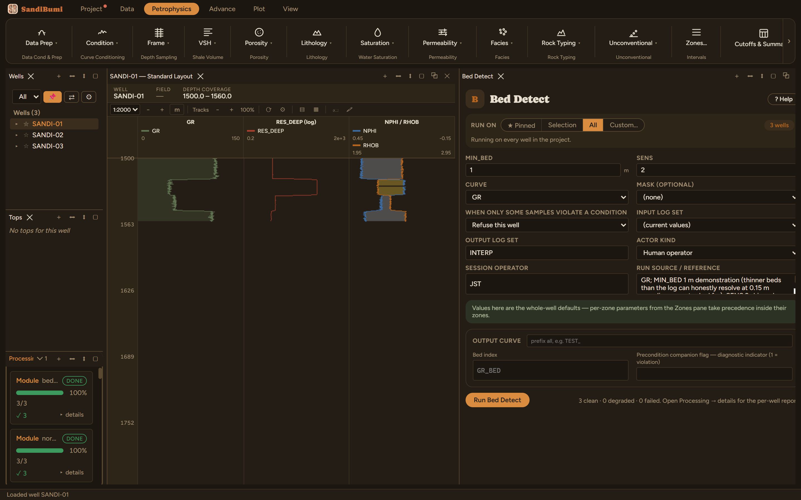

Bed Detect writes the bed number each sample falls in, segmented from the
curve's own steps. It is the same segmentation the Block module's AUTO mode
uses, exposed on its own so the beds can be looked at on a log before
anything is averaged over them. That order matters: over-segmentation is what
a step-finder gets wrong when it gets anything wrong, and a blocked curve
computed from beds nobody checked looks perfectly reasonable.
The physics
A sample opens a new bed when it sits further from the running bed mean
than the detector's threshold, scaled by SENS, and a candidate bed thinner
than MIN_BED is not honoured. So the two controls split the job: MIN_BED is a
statement about resolution (the thinnest bed the log can honestly resolve),
SENS about contrast (how big a step in the curve counts as a boundary).
The picks and why
MIN_BED 1 m: a demonstration floor; at 0.15 m sampling
the tools themselves cannot honestly resolve much thinner.
SENS 2 (shipped). Run live on these wells: SENS 2 finds
19, 20 and 19 beds in the three wells, a segmentation that matches
the section's designed layering. Halving to SENS 1 finds 47, 44
and 45, well over twice the beds from the same rock: every wiggle
with a modest step now opens a boundary. The dial is the
over-segmentation dial, and the bed count is its first-order
readout.
Step by step
Open Petrophysics ▸ Frame ▸ Bed Detect.
Pick the segmenting curve (gamma ray here), set MIN_BED to the honest
resolution floor, leave SENS at 2 to start.
Fill the custody line and press Run Bed Detect.
Put the bed curve in a log-view track as class blocks and judge it
against the log before anything consumes it.
Resolution and contrast, separated on purpose: MIN_BED is about
the log, SENS about the rock.
Reading the result
3 clean, about 19 beds per well. Count them per well in the
Database Inspector:
SELECT w.well_name, MAX(c.value) + 1 AS beds
FROM computed_curves c JOIN wells w ON w.well_id = c.well_id
WHERE c.curve_name LIKE 'GR_BED%' AND NOT isnan(c.value)
GROUP BY w.well_name

19 to 20 beds per well at the shipped sensitivity; the count is
the first thing to sanity-check.
QC and pitfalls
Always view the beds as class blocks beside the segmenting curve before
running Block on them. Two beds where the log shows one contact, or one
bed spanning an obvious boundary, are visible in seconds there.
The bed count is a fast smell test: if it more than doubles when SENS
halves (as it does here), the extra beds are contrast noise, not
stratigraphy.
Segment on the least conditioned curve that shows the boundaries. A
smoothed input ramps its edges, and a ramp is exactly what a step-finder
cannot place.